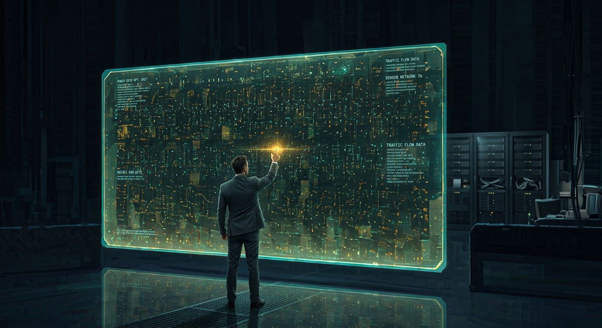

Eredità genetica padre-figlio nel disegno BG5
Perché tuo figlio riflette i tuoi punti di forza e allo stesso tempo ti mette alla prova? La risposta è scritta nel vostro disegno BG5 condiviso.

Cosa rivela il disegno BG5 sul legame genetico padre-figlio
Il disegno di carriera BG5 mappa le attivazioni genetiche che un padre trasmette al figlio attraverso canali e centri definiti condivisi. Confrontando i due BodyGraph si individuano i punti di forza biologici ereditati, le zone di condizionamento reciproco e le ragioni meccaniche per cui un figlio può rispecchiare le qualità paterne e, contemporaneamente, generare attrito. Questa lettura trasforma la genitorialità da correzione comportamentale a gestione consapevole del flusso energetico tra due disegni unici.
Perché tuo figlio ti somiglia e ti sfida allo stesso tempo?
Quando padre e figlio hanno gli stessi canali definiti, condividono un'energia costante e riconoscibile. Il padre vede nel figlio qualcosa di familiare, quasi un riflesso delle proprie capacità. Il problema sorge quando il padre si aspetta che il figlio utilizzi quell'energia nella stessa direzione e con lo stesso ritmo. Un figlio che eredita il canale 21-45, per esempio, porta la stessa spinta al controllo delle risorse materiali del padre, ma se il suo Tipo è Guida anziché Costruttore, il modo in cui quella spinta si esprime sarà radicalmente diverso: dovrà aspettare il riconoscimento e l'invito prima di agire, mentre il padre potrebbe funzionare con una risposta sacrale immediata.
La frustrazione che molti padri provano con i figli deriva proprio da questa sovrapposizione parziale. Si riconosce il talento, si percepisce il potenziale, ma la meccanica del figlio richiede un percorso che al padre appare lento, indiretto o inspiegabilmente diverso dal proprio.
Come funziona il condizionamento attraverso i centri indefiniti?
Ogni centro indefinito nel BodyGraph del figlio è un punto di ricezione e amplificazione dell'energia paterna. Se il padre ha il Plesso Solare definito e il figlio lo ha indefinito, il figlio assorbe e ingrandisce le onde emotive del padre, vivendo emozioni che non gli appartengono con un'intensità superiore a quella originale. Il padre potrebbe attraversare un momento di tensione lavorativa moderata, mentre il figlio la percepisce come un terremoto emotivo senza capirne la ragione.
Lo stesso accade con il centro Cuore/Volontà: un padre con questo centro definito trasmette naturalmente una pressione legata al valore personale e alla dimostrazione di sé. Un figlio con il Cuore indefinito assorbe quella pressione e può sviluppare la convinzione di dover dimostrare costantemente il proprio valore per meritare l'approvazione paterna, anche quando il padre non lo chiede esplicitamente.
Riconoscere queste dinamiche nel confronto dei due disegni permette al genitore di calibrare la propria presenza. Sapere che un centro indefinito amplifica significa poter scegliere quando offrire spazio e silenzio invece di ulteriore energia.
Dalle frizioni alla leadership: trasformare il conflitto in guida
Il passaggio decisivo nella genitorialità letta attraverso il BG5 è smettere di interpretare le differenze meccaniche come difetti caratteriali. Un figlio Costruttore Classico ha un processo metodico e graduale che può sembrare lentezza a un padre Costruttore Rapido abituato a saltare passaggi e concludere in fretta. Quel ritmo diverso è la strategia corretta del figlio, e forzarlo a velocizzarsi significa spingerlo nella frustrazione del not-self.
Quando un padre identifica i canali condivisi con il figlio, ottiene un linguaggio concreto per valorizzare ciò che il figlio porta già dentro di sé. Invece di dire "dovresti fare come me", può dire "vedo che hai la stessa capacità di concentrazione che ho io" e poi rispettare il modo specifico in cui il figlio la esprime secondo il proprio Tipo e la propria Autorità decisionale.
Come si legge concretamente il confronto tra due disegni
Nella pratica di una consulenza BG5 si sovrappongono i due BodyGraph e si osservano tre livelli distinti. Il primo livello riguarda i canali completi condivisi, che rappresentano i talenti ereditati e attivi in entrambi. Il secondo livello riguarda le porte singole che il figlio eredita dal padre e che, combinandosi con porte attivate dalla madre o dal proprio Design inconscio, creano canali nuovi e specifici del figlio. Il terzo livello riguarda i centri indefiniti del figlio che corrispondono a centri definiti del padre, e sono le zone dove il condizionamento è più forte e costante.
Questo tipo di lettura offre al genitore una mappa operativa. Sa dove può accompagnare, dove deve fare un passo indietro, e dove il figlio ha bisogno di sperimentare da solo senza l'interferenza dell'energia paterna amplificata.
Una mappa per crescere insieme
La genitorialità secondo il BG5 parte da un fatto biologico: il figlio porta nel corpo attivazioni genetiche del padre. Quelle attivazioni sono punti di forza reali, verificabili nel confronto dei disegni. La scelta del genitore è tra usare quella mappa per guidare il figlio verso il suo potenziale specifico oppure ignorarla e continuare a correggere comportamenti che sono espressioni meccaniche legittime di un disegno diverso dal proprio. Chi desidera esplorare questo confronto in modo strutturato può farlo attraverso una Panoramica BG5 individuale, che è il primo passo per leggere con precisione le dinamiche familiari scritte nel corpo.
Domande Frequenti
Come si vedono le attivazioni genetiche condivise tra padre e figlio nel BG5?
Si confrontano i due BodyGraph: i canali definiti in entrambi i disegni indicano punti di forza biologici trasmessi geneticamente. Le porte (gate) che il figlio eredita dal padre creano canali completi o parziali che modellano le sue competenze naturali.
Perché mio figlio rispecchia i miei punti di forza ma mi frustra?
Quando padre e figlio condividono canali definiti, il figlio esprime energie simili in modo proprio. La frustrazione nasce quando il padre si aspetta che il figlio usi quelle energie esattamente come lui, ignorando che il Tipo, l'Autorità e il Profilo del figlio possono essere completamente diversi.
Come cambia la genitorialità quando si conosce il disegno BG5 del figlio?
Si passa dal tentativo di correggere comportamenti alla comprensione della meccanica energetica del figlio. Un genitore che conosce i centri indefiniti del figlio sa dove il proprio condizionamento agisce con più forza e può offrire spazio invece di pressione.
I centri indefiniti del figlio sono un problema?
I centri indefiniti sono punti di ricezione e amplificazione, non difetti. Un figlio con il centro Sacrale indefinito, per esempio, assorbe e amplifica l'energia lavorativa del padre ma ha bisogno di ritmi diversi. Riconoscerlo evita di imporre standard energetici inadatti.
Vuoi scoprire la tua meccanica?
Se non conosci ancora il tuo Tipo, calcola gratis la tua carta in pochi secondi. Se lo sai già, prenota una Panoramica BG5® e scopri come funziona nel tuo caso specifico.